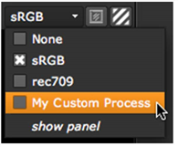

在查看器过程中使用查找表 (LUTs)，您可以调整单个查看器显示，以模拟图像在输出到胶片或某些视频显示设备时的显示方式。 Nuke 包括一些预定义的查看器进程 gizmo，但您也可以通过将节点或 gizmo 注册为查看器进程来添加自己的进程。您可以注册任意数量的自定义查看器进程。如果要在查看器过程中使用项目设置中列出的 1D LUTs 之一，可以使用名为 ViewerProcess_1DLUT 的内置 gizmo。
提示:
有几个注释掉的例子在安装
Init.py
演示如何使用 3D LUT 和 Truelight 进行查看过程的文件。您可以在以下位置找到此文件:
在窗户上
:
驱动器号: \ 程序文件 \
Nuke
10.5v8
\ 插件或
驱动器号: \ 程序文件 (x86) \
Nuke
10.5v8
\ 插件
在 Mac OS X 上
:
/应用程序/
Nuke
10.5v8
/
Nuke
10.5v8
。应用程序/内容/MacOS/插件
在 Linux 上
:
/Usr/本地/
Nuke
10.5v8
/插件
所有可用的查看器进程 (包括自定义进程和预定义进程) 都可以从查看器控件的查看器进程下拉菜单中应用。
|
 |
|
预定义和自定义
查看器进程可以是 从查看器应用 进程下拉菜单。 |
请注意，查看器进程是内置的固定节点管道的一部分，这些节点在图像显示在查看器中之前应用于图像。这个管道要么:
• 增益> 输入过程> 查看器过程> 伽马> 抖动> 通道> cliptest (如果 查看器输入顺序 已设置为 在查看器进程之前 在查看器设置中)
OR
• 增益> 查看器过程> 输入过程> 伽马> 抖动> 通道> cliptest (如果 查看器输入顺序 已设置为 浏览器进程后 在查看器设置中)。
然而，这可能不是正确的顺序，这取决于查看器进程正在做什么。因此，如果您的查看器进程 (或输入进程) 具有也存在于查看器的控件，例如名为 增益 , 伽马 ,或 快船测试 ,然后查看器将它们从相应的查看器控件中驱动，并且不执行图像处理本身。这允许您在查看器过程中使用任何您想要的节点和顺序来实现这些控件。如果您的查看器进程没有这些控件 (并且在使用中的任何输入进程中都找不到它们)，则查看器将根据内置管道以正常方式应用效果。
在内置管道中，抖动被应用于将浮点数据转换为实际显示位深度时的扩散舍入错误。虽然 cliptest 是在最后绘制的，但它是在图像上计算的，作为对查看器的输入。
|
|